SECCIÓN 4E
FRENOS DE DISCO TRASEROS
ESPECIFICACIONES
Especificaciones generales
| Aplicación | Milímetros | Pulgadas |
| Discos de los frenos traseros: |
| Espesor de descarte | 10 | 0.394 |
| Excentricidad lateral (instalada) | 0.06 | 0.002 |
| Diámetro del disco | 276 | 10.86 |
| Espesor del disco (nuevo) | 12 | 0.472 |
| Tolerancia en espesor | 0.03 | 0.001 |
| Pinza: |
| Diámetro mínimo del pistón (trasero) | 35.00 | 1.38 |
Especificaciones de apriete de la sujeción
| Aplicación | N•m | Árbol de transmisión izquierdo | Articulación |
| Juntas anulares y tornillo del racor de entrada del manguito de freno | 32 | 24 | - |
| Tornillos de fijación de la pinza de freno | 45 | 33 | - |
| Tornillo de fijación inferior de la pinza de freno | 31 | 23 | - |
| Tornillo del conjunto del muelle de sujeción de la zapata del freno de estacionamiento | 4 | - | 35 |
| Tornillo de retención del disco | 4 | - | 35 |
| Tornillos del cubo | 65 | 48 | - |
DIAGNÓSTICO
Control de forros
- Levante y apoye el vehículo adecuadamente.
- Desmonte las ruedas traseras. Consulte la Sección 2E, Neumáticos y ruedas.
- Compruebe visualmente el espesor mínimo y el desgaste de los forros de las zapatas de freno.
- Mida el espesor.
Importante: El espesor de descarte mínimo del forro de la zapata de freno es de 2 mm (0,08 pulg.).
- Monte las zapatas sólo en conjuntos de eje.
- Monte las zapatas sólo en conjuntos de eje.
- Monte las ruedas traseras. Consulte la Sección 2E, Neumáticos y ruedas.
- Baje el vehículo.
Control del rotor
Los discos de freno se fabrican con estrechas tolerancias de variación de espesor, planitud y excentricidad lateral, sin embargo, durante su utilización se forman ranuras y picaduras. La falta de uniformidad en las superficies de frenado del disco pueden dar lugar a una frenada incorrecta o a pulsaciones del pedal durante la acción de frenado. El acabado de la superficie del disco también es importante porque un acabado inapropiado puede provocar inestabilidad y desgaste rápido del forro de la zapata. El disco de freno que no cumpla las especificaciones debe rectificarse o sustituirse. El rectificado del disco sólo debe realizarse con un equipo de precisión.
La variación del espesor puede comprobarse midiendo el disco de freno en cuatro o más puntos alrededor de la circunferencia del mismo. Todas las mediciones deben efectuarse a la misma distancia del borde del disco. Un disco que varíe más de 1,0 mm (0,04 pulgadas) puede provocar pulsaciones en el pedal y/o vibraciones en la parte delantera durante la frenada. El espesor debe medirse con micrómetros disponibles en comercios y debe tener 10 mm (0,39 pulg.) o más.
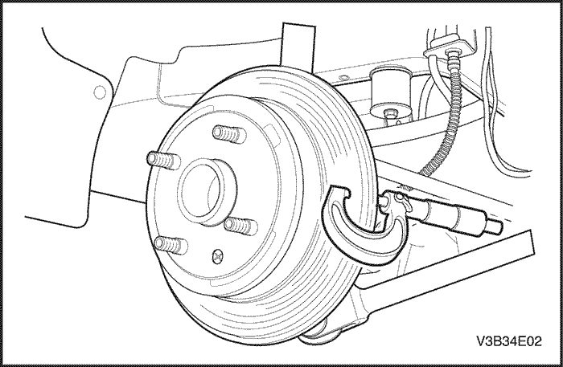


Se puede permitir un ligero rayado de las superficies del disco si éste no sobrepasa los 0,40 mm (0,016 pulg.) de profundidad. Puede medirse el rayado con micrómetros para frenos disponibles en comercios.
La excentricidad lateral no puede superar los 0,06 mm (0,002 pulgadas). Si la excentricidad lateral supera el valor especificado, asegúrese de que no haya suciedad entre el disco y el cubo de rueda y que las superficies de contacto sean suaves y carezcan de rebabas. Use un comparador disponible comercialmente para comprobar la excentricidad lateral según el siguiente procedimiento:
- Seleccione la posición de punto muerto en la caja de cambios y levante el vehículo.
- Para mantener el equilibrio de ruedas, marque las posiciones de la rueda respecto al cubo y desmonte la rueda trasera.
- Sujete el disco de freno en el cubo de la rueda.
- Monte un comparador en la pinza de freno.
- Sitúe la punta del indicador a unos 10 mm (0,39 pulgadas) del borde exterior del disco de freno, perpendicular al disco y sometido a una ligera precarga. Observe el indicador mientras gira el disco.
- Una vez terminada la medición, retire el comparador y quite las tuercas de la rueda.
- Si fuera necesario, rectifique el disco con un equipo de precisión. Vuelva a medir la excentricidad después del rectificado. Si la excentricidad sobrepasa los 0,06 mm (0,002 pulg.) después de rectificar el disco, éste debe sustituirse.
- Alinee las marcas que se hicieron antes de desmontar la rueda y monte la rueda delantera.
- Baje el vehículo.
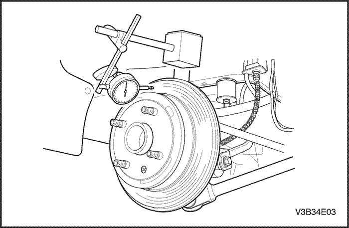
MANTENIMIENTO Y REPARACIÓN
servicio con vehículo en marcha
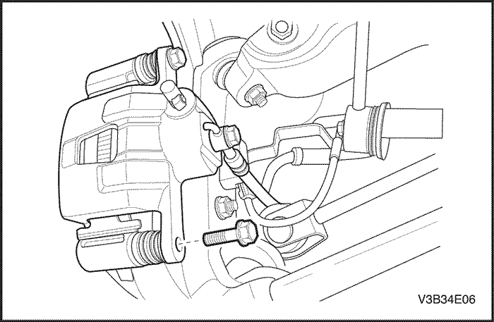
Zapata y forro
Procedimiento de desmontaje
- Levante y apoye el vehículo adecuadamente.
- Desmonte las ruedas traseras. Consulte la Sección 2E, Neumáticos y ruedas.
- Quite el tornillo guía inferior de la pinza de freno.
Importante: No es necesario desmontar la pinza de freno para el mantenimiento de las pastillas de freno.
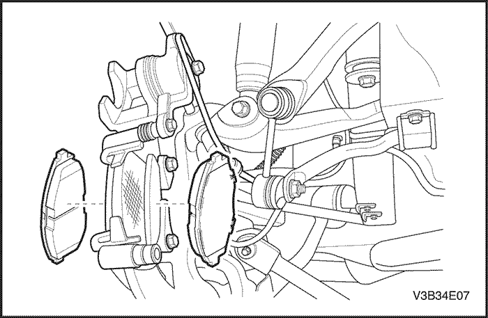
- Gire la pinza hacia arriba.
- Desmonte las zapatas de freno.
procedimiento de montaje
- Mida el espesor mínimo del forro de la zapata de freno. Consulte el apartado "Comprobación de los forros de freno" de esta sección.
- Monte las zapatas en la pinza de freno.
- Si fuera necesario, empuje el pistón hacia dentro.
Aviso: No dañe el retén del pistón cuando empuje el alojamiento del pistón.
- Gire la pinza de freno hacia abajo y coloque el tornillo.
Apretar
Apriete el tornillo de fijación inferior de la pinza de freno hasta 31 N•m (23 lb-pie).
- Monte las ruedas traseras. Consulte la Sección 2E, Neumáticos y ruedas.
- Baje el vehículo.
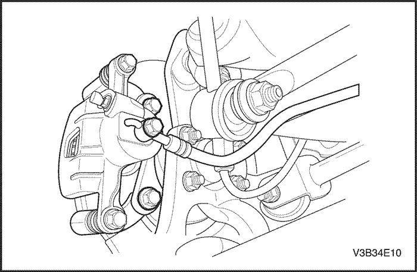
Calibrador
Procedimiento de desmontaje
- Levante y apoye el vehículo adecuadamente.
- Marque la posición de las ruedas traseras respecto a los cubos de rueda y desmonte las ruedas. Consulte la Sección 2E, Neumáticos y ruedas.
- Quite el tornillo y las juntas anulares que sujetan el racor de entrada del manguito de freno a la pinza.

- Desconecte el manguito de freno. Tape las aberturas en la pinza y el manguito de freno para evitar la pérdida de líquido o la entrada de suciedad.
- Quite de la mangueta los tornillos de fijación de la pinza de freno.
- Desmonte la pinza de freno.
procedimiento de montaje
- Monte la pinza con sus tornillos de fijación.
Apretar
Apriete los tornillos de fijación de la pinza de freno hasta 45 N•m (33 lb-pie).
- Conecte el manguito de freno con el tornillo y las juntas anulares.
Apretar
Apriete el tornillo del racor de entrada del manguito de freno y las juntas anulares hasta 32 N•m (24 lb-pie).
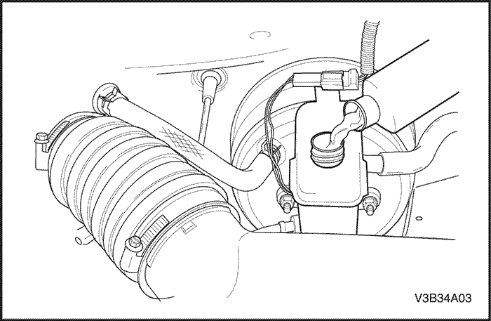
- Monte las ruedas traseras. Consulte la Sección 2E, Neumáticos y ruedas.
- Baje el vehículo.
- Llene el cilindro maestro hasta el nivel adecuado de líquido de frenos limpio.
- Purgue la pinza. Consulte la Sección 4F, Sistema antibloqueo de frenos.

Rotor
Procedimiento de desmontaje
- Desmonte la pinza de freno. Consulte el apartado "Pinza de freno" de esta sección.
- Desmonte las zapatas de freno.
- Desmonte el soporte de fijación de la pinza de freno.
- Quite el tornillo de retención del disco de freno.
- Desmonte el disco de freno.
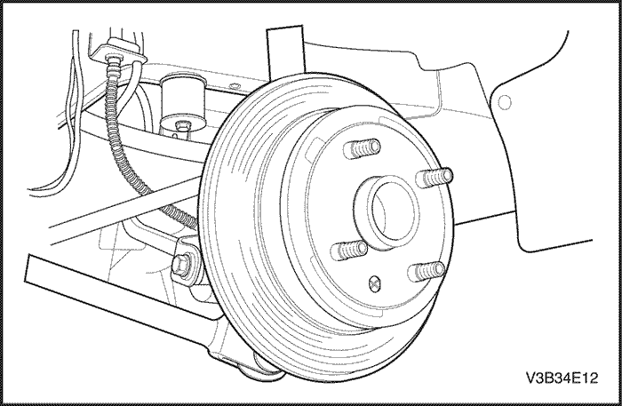
procedimiento de montaje
Importante: Para garantizar un frenado uniforme, rectifique siempre los dos discos aunque solamente haya un disco defectuoso.
- Monte el disco en el cubo de rueda delantera y coloque el tornillo de retención.
Apretar
Apriete los tornillos de retención del disco hasta 4 N•m (35 lb-pulg.).
- Ponga unas cuantas gotas de masilla de fijación de roscas en los tornillos de fijación de la pinza de freno y monte el soporte de la pinza.
Apretar
Apriete los tornillos de fijación del soporte de la pinza de freno hasta 45 N•m (33 lb-pie).
- Monte las zapatas y la pinza de freno. Consulte el apartado "Pinza de freno" de esta sección.
Buje y zapata/contraplato de freno de estacionamiento
Procedimiento de desmontaje
- Desmonte el soporte de fijación de la pinza de freno.

- Quite el tornillo de retención del disco de freno.
- Desmonte el disco de freno.
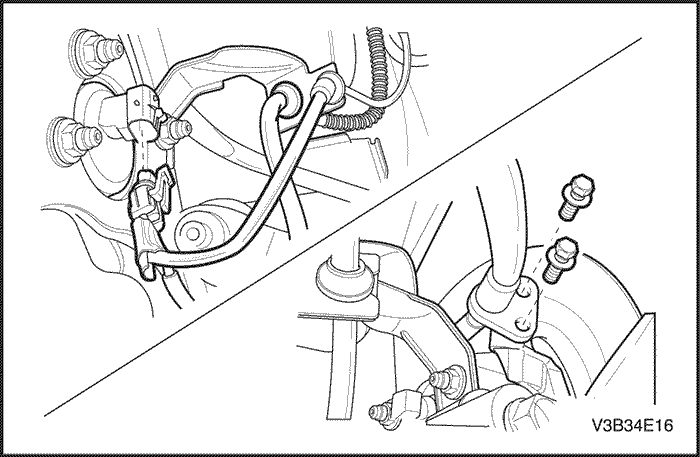
- Desmonte el sensor del ABS.
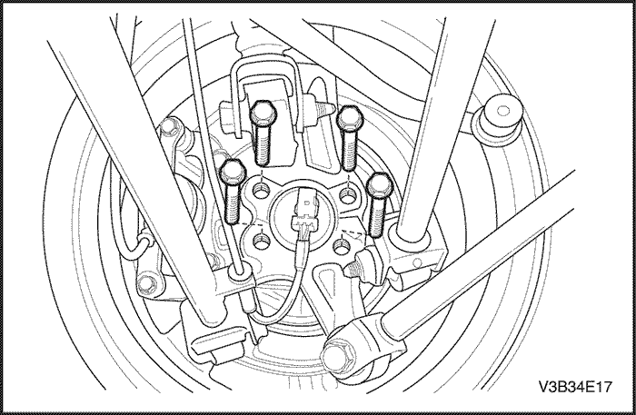
- Quite los tornillos del cubo y desmonte el cubo.
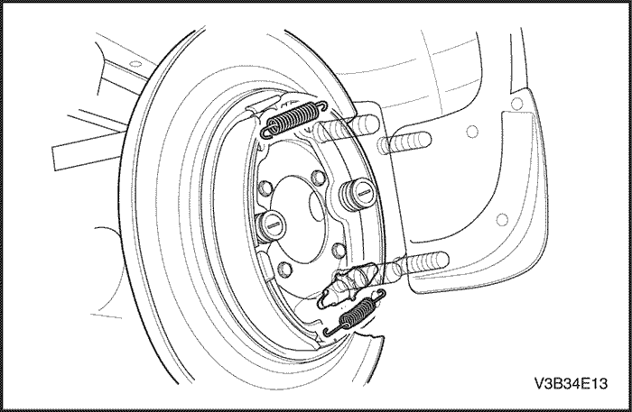
- Desmonte el muelle de retorno superior, el muelle de retorno inferior y el conjunto del ajustador.
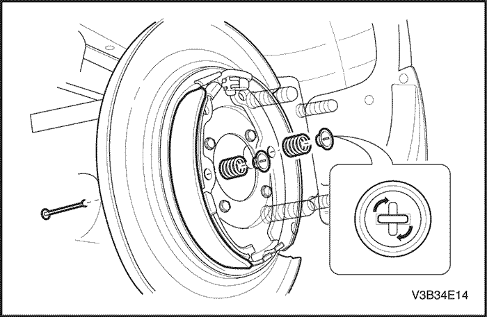
- Desmonte la placa del muelle de retención, el muelle y el pasador del muelle de retención.
- Desmonte la zapata del freno de estacionamiento.
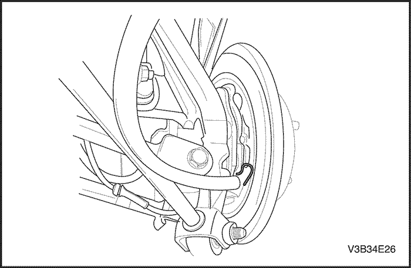
- Quite el pasador del cable del freno de estacionamiento y retire el cable de la placa de apoyo.
procedimiento de montaje
- Conecte el cable del freno de estacionamiento a la placa de apoyo y bloquee el pasador.
- Coloque el pasador del muelle de retención, la zapata del freno de estacionamiento, el muelle de retención y la placa del muelle de retención.
- Monte el conjunto del ajustador, el muelle de retorno inferior y el muelle de retorno superior.
- Monte el cubo con los tornillos.
Apretar
Apriete los tornillos del cubo hasta 65 N•m (48 lb-pie).
- Monte el sensor del ABS.
- Monte el disco de freno con el tornillo de retención.
Apretar
Apriete los tornillos de retención del disco hasta 4 N•m (35 lb-pulg.).
- Monte el soporte de fijación de la pinza con sus tornillos.
Apretar
Apriete los tornillos de fijación del soporte de la pinza de freno hasta 45 N•m (33 lb-pie).
- Monte la rueda.
REPARACIÓN DE LA UNIDAD
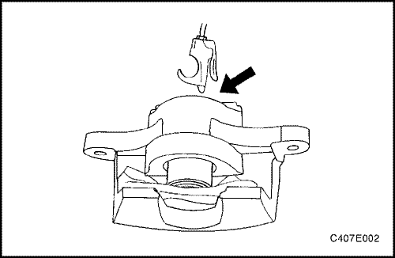
Mantenimiento de calibrador
- Desmonte la pinza de freno. Consulte el apartado "Pinza de freno" de esta sección.
Precaución: No intente agarrar el pistón cuando lo desmonte con aire comprimido. El pistón saltará de su alojamiento con bastante fuerza y puede hacerle daño en la mano o los dedos.
Importante: Cuando desmonte el pistón de la pinza con aire comprimido, coloque algunas toallas de taller enrolladas debajo de la pinza para evitar daños en el pistón.
- Use aire comprimido sin contenido de aceite en la entrada del manguito de la pinza.
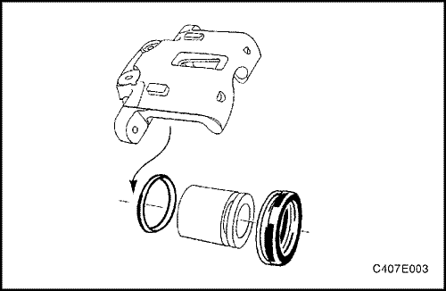
- Desmonte el pistón de su alojamiento y retire la junta guardapolvo del pistón.
- Desmonte el retén interior del alojamiento. No arañe el alojamiento.
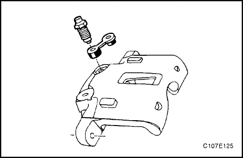
- Quite el tapón guardapolvo de la válvula de purga y desmonte dicha válvula.
Procedimiento de montaje (armado, ensamblaje)
Importante: No use ni un bruñidor ni otro procedimiento para eliminar material del pistón o del interior de la pinza.
- Limpie todas las piezas con alcohol desnaturalizado o líquido de frenos. Seque las piezas con aire comprimido sin contenido de aceite y sople todos los conductos del alojamiento y de la válvula de purga.
- Compruebe si hay rayas, melladuras o corrosión en el pistón y en la pinza de freno. Sustituya cualquier componente que presente estas anomalías.
- Monte la válvula de purga y el tapón guardapolvo.
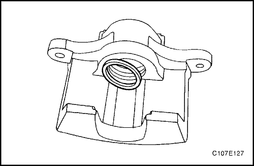
- Lubrique el nuevo retén interior del pistón con líquido de frenos.
- Monte el retén interior del pistón en la ranura del interior de la pinza de freno.
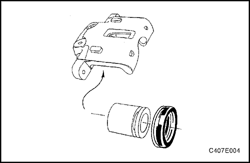
- Coloque la junta guardapolvo del pistón en su ranura.
- Lubrique el pistón con líquido de frenos.
- Empuje el pistón hacia adentro hasta que se asiente correctamente. Asegúrese de que la junta guardapolvo está en la ranura correcta en el pistón y la pinza.
- Vuelva a montar la pinza de freno. Consulte el apartado "Pinza de freno" de esta sección.
- Purgue el sistema de frenos. Consulte la Sección 4F, Sistema antibloqueo de frenos.
DESCRIPCIÓN GENERAL Y FUNCIONAMIENTO DEL SISTEMA
Conjunto del calibrador de frenos de disco
Esta pinza de freno dispone de un único alojamiento y va montada a la mangueta con dos tornillos de fijación. La presión hidráulica que se crea al pisar el pedal de freno se convierte, por la acción de esta pinza, en una fuerza de detención. Esta fuerza actúa igualmente contra el pistón y contra la parte inferior del interior de la pinza para desplazar el pistón hacia fuera y hacer que se deslice la pinza hacia dentro, ejerciendo una acción de pinza sobre el disco de freno. Esta acción de pinza fuerza los forros contra el disco de freno, creando un rozamiento capaz de parar el vehículo.
Importante: - Sustituya todos los componentes incluidos en los kit de reparación utilizados para reparar esta pinza de freno.
- Lubrique las piezas de goma con líquido de frenos limpio para facilitar su montaje.
- No utilice aire comprimido del taller, con un cierto contenido de aceite, en las piezas del freno, ya que se pueden ocasionar daños a los componentes de goma.
- Si se desmonta o se desconecta cualquier componente del sistema hidráulico, puede resultar necesario tener que purgar la totalidad o una parte del sistema de frenos. Consulte la Sección 4F, Sistema antibloqueo de frenos.
- Sustituya las zapatas de freno sólo en conjuntos de eje.
- Los valores de los pares de apriete especificados son para elementos de sujeción secos y sin lubricar.
- Efectúe las labores de reparación en un banco limpio y sin ningún material grasiento.